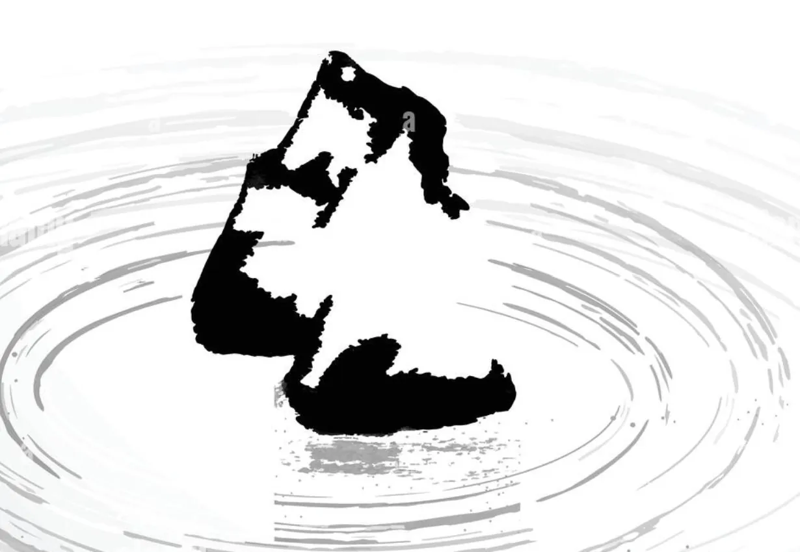
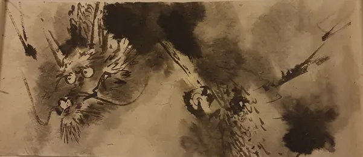

Ilford Dojo 道場
Church Hall, St Andrew’s, The Drive, Ilford IG1 3PE
- Karate — Thursdays 7pm–9pm
- Tai Chi — Thursdays 6pm–7pm
- Yoga — Thursdays 8pm–9pm
Classical Shotokan Karate, Tai Chi Chuan, Yoga and Shiatsu in Ilford & Epping — taught with patience, rooted in tradition, and open to every age and ability.
EmptyHands is a Traditional KaraTe School. Our practice is based on the classical Shotokan system with influences from Goju Ryu, Shiatsu (acupressure) and Internal Martial Arts (Tai Chi Chuan).
Our Dojo was founded in 2006 on the ideals of Gichin Funakoshi Hanshi, founder of modern-day Karate. The format of our syllabus has been inspired by the work of the late Hirokazu Kanazawa Sōke, with some adaptations — and we place great emphasis on the values and beliefs of Karate through the study of the Dojo Kun.


From your first bow on the dojo floor to one-to-one healing — everything we teach informs everything else.
 空手
空手Classical Shotokan with Goju Ryu influences — kihon, kata, bunkai and kumite for children and adults.
DiscoverヨガHimalayan Hatha Yoga, blended with Karate, Tai Chi and Shiatsu to ease everyday stress.
Discover
太極拳Traditional Yang family Tai Chi Chuan in the lineage of Master Ding.
Discover指圧Japanese finger-pressure therapy for wellbeing, self-care and rehabilitation.
Discover 指導
指導Person-centred coaching for self-development, rehabilitation and wellbeing.
DiscoverOur teaching philosophy is person-centred and built on the fundamentals every karateka returns to, from white belt to Sensei.
Stances, blocks, strikes and kicks repeated until they become second nature.
Choreographed sequences that carry the techniques and spirit of the masters.
Unlocking what each movement of a kata really means — and how to use it.
Safe, controlled partner work that develops timing, distance and composure.
Recited at the close of every class, the Dojo Kun are the values our students carry out of the dojo and into school, work and family life.
We publish our calendar at the end of each year so every student can plan the year ahead. 2026 calendar

Azeem founded EmptyHands in March 2006 to create a Dojo grounded in the principles of Bushidō — discipline, respect and purpose — while embracing thoughtful, modern interpretation.
Guided by masters including Hirokazu Kanazawa Sōke, Chris Rowen Shihan, Yoshinobu Ohta Sensei and Nobuaki Kanazawa Kanchō, he also studied Tai Chi Chuan with Master John Ding and graduated from the British School of Shiatsu-Do. His Oxford Brookes MA developed the first Karate Coaching Model.
Meet all our instructorsKihon, kata, kumite and gradings — two minutes of real training on the dojo floor.
Empty hands have been absolutely amazing! My 9 and 11 year old have been attending for several months now. They really enjoy their sessions and always come back having learnt so much and so excited for the next session! The sessions are so organised and I leave my daughters there and trust that they are also safe too. We will definitely be watching our daughters grow with empty hands until the end and couldn’t thank them enough!
I have been attending this dojo for several years now and it has been excellent all throughout. This dojo is incredibly dedicated to teaching students and has great amounts of respect to karate — it has taught me a lot about karate in many aspects (not just the physical aspects — theory and history of karate too) and I have great respect towards the art because of this. The dojo also teaches you a lot about mindfulness, which is incredibly important and has helped me a lot in my general life as well as my training. I would definitely highly recommend people to join and be a part of this experience.
My children have been attending this dojo for five years now. From day one they were made to feel welcome and Irm, one of the instructors, has an excellent way with young children. I’ve seen both of my kids gain knowledge and develop their techniques. Sensei Azeem is an excellent instructor and my kids enjoy the training they have had in their journey. The monthly workshops are very informative and enjoyable, making it altogether an invaluable experience. In addition to karate I’ve seen the development of self-confidence, discipline and a positive mindset in both of my children. There is a celebration of success at the final lesson of the year which everyone enjoys and it’s a fitting way to round off the year.
I’ve known Azeem for nearly 14 years as a colleague and friend. Having trained with Azeem at the British School of Shiatsu-Do, I can vouch for his professionalism and skill. His Shiatsu practice is well informed, skilled, sensitive and intuitive. Azeem takes a holistic view of the client, able to treat them individually and appropriately, understanding the type of treatment required. His treatments for my back pain have been second to none! As well as Shiatsu, Azeem remains totally committed to his Karate Dojo, understanding how one art form informs and supports the other. If you are lucky enough to be able to book a shiatsu treatment with Azeem, you’ll reap the health rewards and meet a lovely person to boot!
I have known Azeem Sensei since the early nineties where he first started his training with Poon Dojo in Shotokan Karate. He excelled in his training and achieved his 1st Dan Black Belt with us. His dedication, discipline and hard work continued with the Poon Dojo where he helped train young students and mentored some of our other senior students — a good role model and someone looked upon highly by the Poon Dojo students. Azeem Sensei then continued his training with the JKA and other various teachers, where he then set up Empty Hands. He followed the same ethos, etiquette and discipline as Poon Dojo and integrated this within his own dojo. Following tradition, Azeem Sensei continues to raise some fine students within Empty Hands and is forever finding ways of improving his school’s training drills, syllabus and all other aspects of training in Karate-Do, including Kihon, Kumite & Kata. Time, dedication and hard training proves the success of the Dojo, which is evident from his loyal senior students. We wish Empty Hand Dojo every success in their martial journey for years to come.
It has been just over twenty years ago that Azeem became one of my first students within the martial arts. At that time he displayed a depth and dedication which made it very easy for me to teach him Karate. I have vivid memories of training him in the garden, at the car park, essentially wherever we could find space that in turn became the ‘dojo’ for us. Azeem was instrumental in the early days of setting up Poon Dojo and became one of our senior students. He was committed to his training, often training in-between very awkward shift hours at work, sometimes even after a night shift! Azeem always sought to research Karate and strived to act as an ambassador for this Art — this led to the creation of one of the earliest Martial Arts online journals, ZenKarate, which was completely free to the reader. His quest to grow naturally led to the formation of his own Karate school, EmptyHands. At EmptyHands, practice is informed by theory. Azeem embodies the spirit of Budo, and it is this spirit and his tenacity that drives him to accomplish all that he puts his mind to. If you want a traditional Budo dojo to learn classical Karate Do, this is the place to come.
I have known Azeem for most of his Karate career and have always been impressed with his passion for Martial Arts. Over the years I have got to know him as a student and a friend. He is a shining example of one who has put time, effort and belief into Karate-Do and has selflessly shared it for the benefit of a wider audience. He recently completed an MA research study in Karate Coaching which has been a ground-breaking and thought-provoking contribution to the literature of Karate-do. Azeem is a true traditional martial artist who has persistently exemplified devout loyalty and respect to the Karate lineage. His innovative and forward-thinking approach has made him a great ambassador of Karate. In the 90s he pioneered one of the first online Karate magazines, where martial artists from all walks of life would come together to share their ideas.
Every name on our Yudansha wall started exactly where you would: at white belt, nervous, on their first night.


The purpose of this blog is to share my experiences and some thoughts from the lockdown which have helped me to maintain routine without being perturbed by…

History of Karate began over a thousand years ago, possibly as early as the fifth century BC when Bodhidharma arrived in China (Henan Province, Songshan…

Many studies have shown that Martial Arts (all contact sports) are often associated to high risk of injuries. Subsequently, there is a need of a more pragmatic…
Classes have run across Ilford, Woodford & Epping since 2006.
Church Hall, St Andrew’s, The Drive, Ilford IG1 3PE
Jack Silley Pavilion, Epping
New students can pay as they go for their first few weeks — just turn up in comfortable clothes.